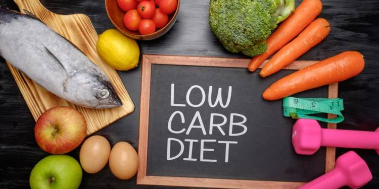
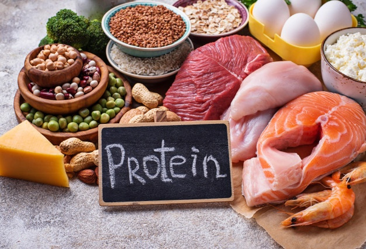
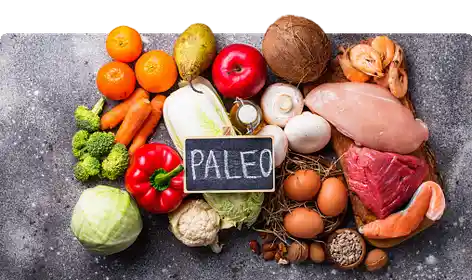
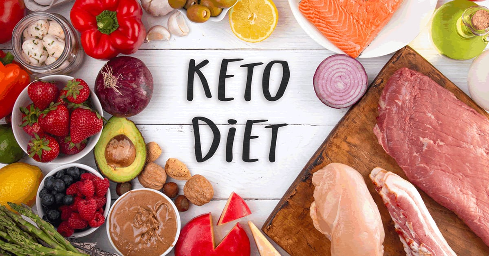

Low Carb diet
A Low Carb Diet Is One That Limits Carbohydrates, Low carb diet Studies Show That Low Carb Diets Can Result In Weight Loss And Improved Health Markers.
learn more
A Low Carb Diet Is One That Limits Carbohydrates, Low carb diet Studies Show That Low Carb Diets Can Result In Weight Loss And Improved Health Markers.
learn more
High-Protein Diets Typically Include Large Quantities Of Protein And Only A Small Amount Of Carbohydrate. In Addition To Aiding Weight Loss, Protein Provides The Body With Some Essential Benefits.
learn moreHigh-Protein Diets Typically Include Large Quantities Of Protein And Only A Small Amount Of Carbohydrate. In Addition To Aiding Weight Loss, Protein Provides The Body With Some Essential Benefits.
learn more
The Paleo Diet Is Designed To Resemble What Human Hunter-Gatherer Ancestors Ate Thousands Of Years Ago.In Fact, Several Studies Suggest That This Diet Can Lead To Significant Weight Loss (Without Calorie Counting) And Major Improvements In Health.
learn moreIntermittent Fasting Diet Isn’t So Much A Diet As An Eating Strategy Where You Consume All Of Your Calories In A Set Time Period And Then Fast For The Rest Of The Day.
learn more
The Ketogenic Diet (Or Keto Diet, For Short) Is A Low Carb, High Fat Diet That Offers Many Health Benefits.Ketogenic Diets May Even Have Benefits Against Diabetes, Cancer, Epilepsy, And Alzheimer’s Disease.
learn more